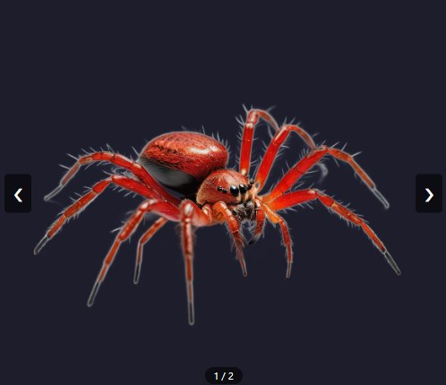
Image
Write a prompt or import a picture, then perfect it with the image tools.
Type a prompt or drop a picture. Get a textured 3D model, rig it, and export it to Unreal, Blender or Unity.
50 free credits on sign-up · Windows app free during the beta
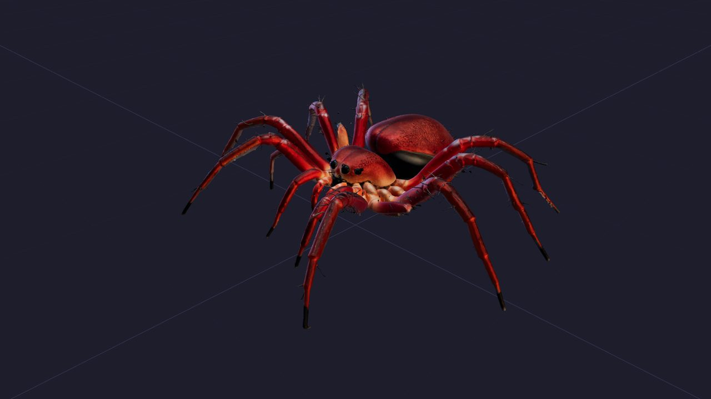
The same four steps as in the app. Each step opens in its own 2D or 3D viewer, where you edit the result directly, then redo only what you want.

Write a prompt or import a picture, then perfect it with the image tools.
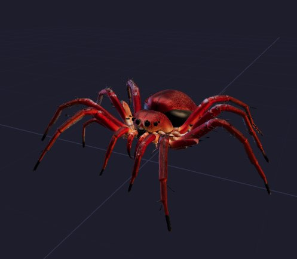
Loading 3D…One click turns the image into a textured model: up to 8K textures and 10 million triangles.
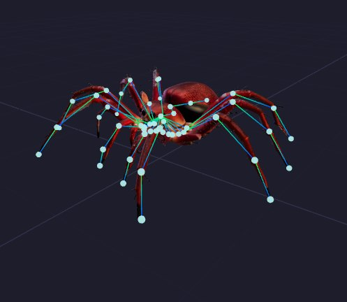
Loading 3D…An automatic skeleton for any body, which you can adjust point by point.
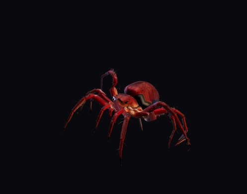
Loading 3D…Add idle, walk, run or attack clips, then export to FBX or Unreal. In beta.
Steps 2 to 4 are live 3D viewers: drag to rotate, scroll to zoom. The models are reduced to about 400,000 triangles here for smooth display; the app keeps and exports the full model.
Most generators stop at the result: if something is wrong, you start again. Here you edit directly in the 2D and 3D viewers, with two kinds of tools: automatic AI tools, and semi-manual tools you control by hand.
AI automatic AI tool Manual semi-manual tool
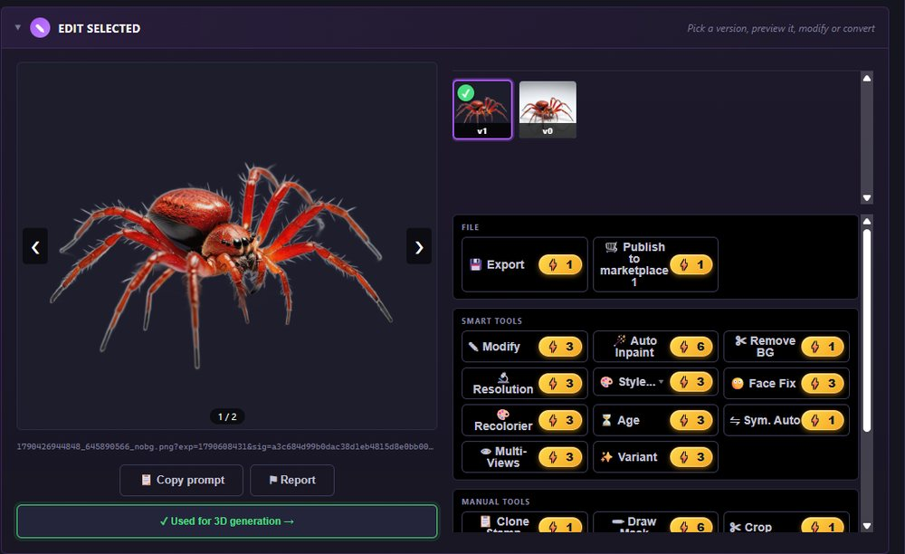
Edit the picture right in the viewer: let the AI repaint, restyle or clean it, or retouch it yourself with the brush, mask and clone tools.
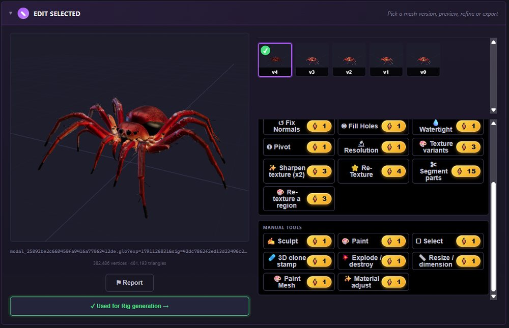
Work on the model in the 3D viewer: AI re-texturing and part detection, automatic repairs, and hands-on sculpting, painting and cloning on the surface.
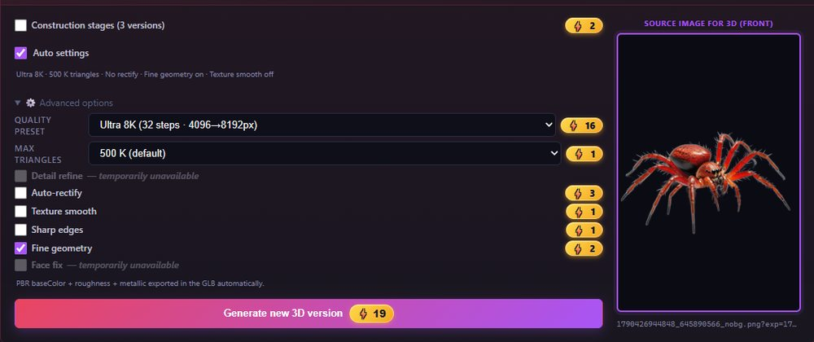
Auto settings picks the right quality, detail and triangle count for your subject. Prefer to decide? Every option stays available, with its price shown next to it.
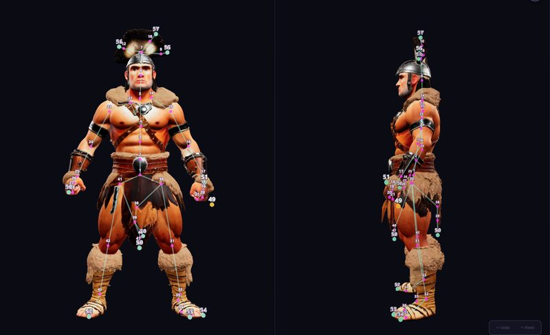
The skeleton is built automatically. Move any point in the front and side views, add or remove points, then rebuild the rig around your changes.
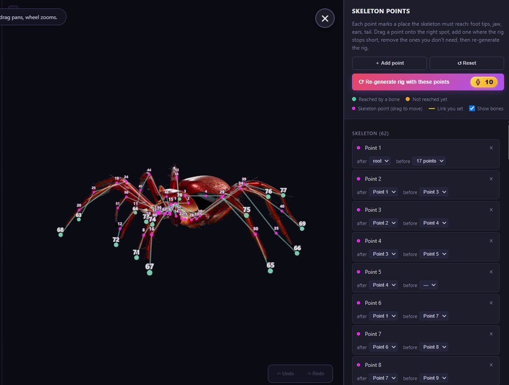
Two legs, four, six or eight: the skeleton adapts to the body. Every point stays editable, whatever the species.
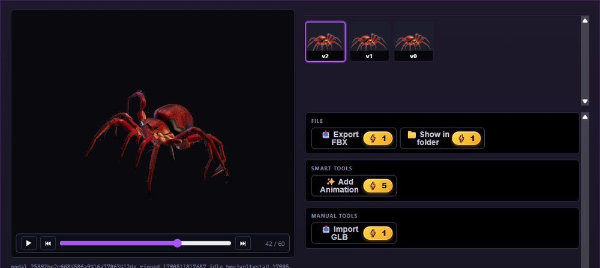
Pick the clips you need and the rig comes to life. Each clip becomes a new version you can preview and export.
Every generation and every edit becomes a new version. The original is never overwritten.
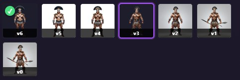
Same tools, same projects. Pick the one that fits your computer.
Not sure your PC is powerful enough? Check it in 5 seconds.
Characters, animals, buildings, vehicles: each project keeps every version of its images, models and rigs.
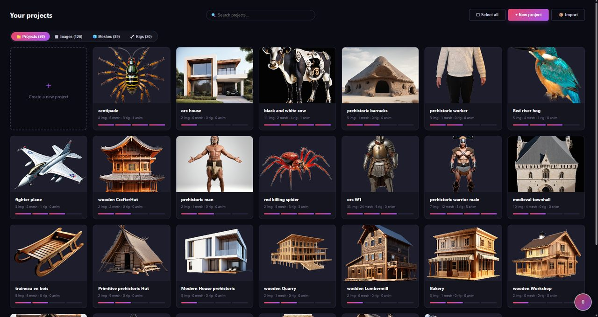
Publish your images and models on the built-in marketplace, for free or at your own price, and browse what other creators made. Paid sales open soon.
Visit the marketplaceIf you have a Windows PC with an NVIDIA card of 12 GB or more, the Windows app gives you unlimited generations. Otherwise, use the web app: it runs on our servers and works on any device, Mac included.
It depends on the quality you choose. An image costs 1 to 6 credits, a 3D model a few credits in draft quality and around 20 at the highest quality, a rig 10 credits. The exact price is always shown on the button before you start.
Yes. The images and models you create are yours to use in your own projects, including commercial ones.
GLB, FBX, OBJ and STL. The Unreal export sets the right scale and axes, so the model lands in your level at the correct size.
Your account and projects are stored in the European Union (Frankfurt). Temporary working files are deleted after 30 days, error logs too. You can delete your account at any time: everything is erased within 30 days. Details in the privacy policy.
A content filter is on by default: it blocks inappropriate requests before anything is generated, and checks every image produced. Only an adult can lift it, with a PIN code, and lock it again at any time. Every creation also has a Report button.
The Windows app needs an NVIDIA card. With AMD, Intel or a Mac, use the web app: it does not use your graphics card.